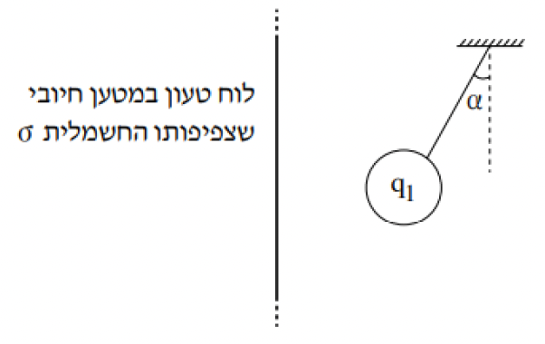
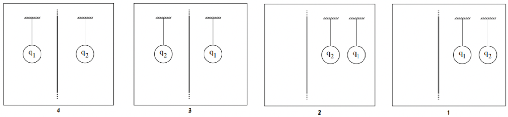

שאלה 1
תלמיד ערך שני ניסויים. מערכת הניסוי הראשון הייתה מורכבת מכדור קטן מוליך הטעון במטען q1 ולוח מוליך גדול הטעון במטען חשמלי חיובי שצפיפותו השטחית, σ, אחידה.
התלמיד תלה את הכדור הטעון מול הלוח על חוט מבודד וקל. הכדור סטה לעבר הלוח, וכאשר הגיע למצב מנוחה נוצרה זווית α בין החוט לבין הכיוון האנכי, כמתואר בתרשים 1. יש להתייחס לכדור התלוי כגוף נקודתי. השפעת הכדור הטעון על צפיפות המטען החשמלי בלוח זניחה. נתון כי המסה של הכדור היא m = 1gr.

סרטטו את תרשים הכוחות הפועלים על הכדור התלוי. ליד כל כוח רשמו את שמו. (4 נקודות)
במהלך הניסוי שינה התלמיד כמה פעמים את צפיפות המטען החשמלי, σ, ובכל פעם מדד את ערך הזווית α וחישב את ערך tan(α).
בטבלה שלפניכם מוצגים ערכי צפיפות המטען החשמלי, σ, ערכי α וערכי tan(α).
| σ [C/m2] × 10-7 |
1.50 | 2.25 | 3.25 | 4.00 | 5.00 |
|---|---|---|---|---|---|
| α [°] | 4 | 6 | 8 | 10 | 12 |
| tan(α) | 0.07 | 0.11 | 0.14 | 0.18 | 0.21 |
סרטטו במחברתכם גרף (דיאגרמת פיזור) של tan(α) כפונקציה של צפיפות המטען החשמלי, σ, והוסיפו בו את קו המגמה. (7 נקודות)
חשבו את השיפוע של קו המגמה שסרטטתם. (5 נקודות)
פתחו ביטוי של tan(α) כפונקציה של σ. השתמשו בקבועים: g, ε0, m1 ו-q1. (6 נקודות)
קבעו את הסימן של המטען q1. נמקו את קביעתכם.
חשבו, על פי הגרף שסרטטתם, את גודלו של המטען q1.
(6 נקודות)
בניסוי השני הוסיף התלמיד למערכת הניסוי כדור קטן מוליך הטעון במטען q2 ותלה גם אותו על חוט מבודד וקל.
נתון כי גודל המטען של שני הכדורים שווה, אך סימני מטעניהם הפוכים.
בלי לשנות את ערכי צפיפות המטען החשמלי σ של הלוח, מיקם התלמיד גם את הכדור השני מול הלוח. כאשר שני הכדורים הגיעו למצב מנוחה היו החוטים מקבילים ללוח (α = 0 בשני החוטים).
לפניכם ארבעה תרשימים, 1-4, המתארים את מיקום הכדורים והלוח. קבעו איזה מן התרשימים אפשרי. נמקו את קביעתכם. (5.33 נקודות)
